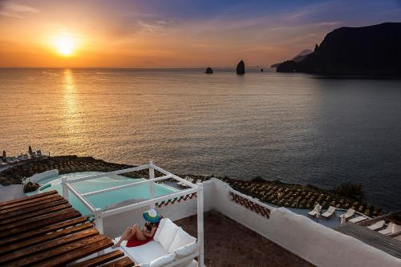
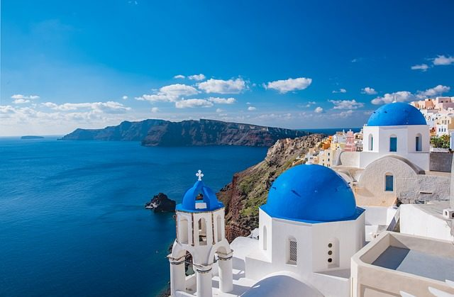

egy kör alakú vulkanikus szigetcsoport az Égei-tengerben. Görögország része, Athéntól körülbelül 200 km-rel délkeletre. A Kükládok szigetcsoportjának legdélibb tagja. Szantorini alapvetően egy irdatlan erejű vulkanikus robbanás maradványa, amely megsemmisítette a korabeli településeket az eredetileg egyetlen szigeten; ez alakította ki a jelenlegi, nagyrészt vízzel feltöltött kalderát. Látványos szépsége és élénk éjszakai élete a szigeteket Európa egyik legvonzóbb turisztikai célpontjává tették.
Therasia, más néven Thirasía, egy sziget a görög Kükládok Santorini vulkanikus szigetcsoportjában. Északnyugatra fekszik Nea Kamenitől, egy kis szigettől, amelyet az utóbbi évszázadokban vulkanikus tevékenység alakított ki, és ezáltal a szigetcsoport központját jelöli.
Megközelítés:
Szállás:
Összesen: 109.090Ft.

Megközelítés:
Szállás:
Összesen: 142.318Ft.